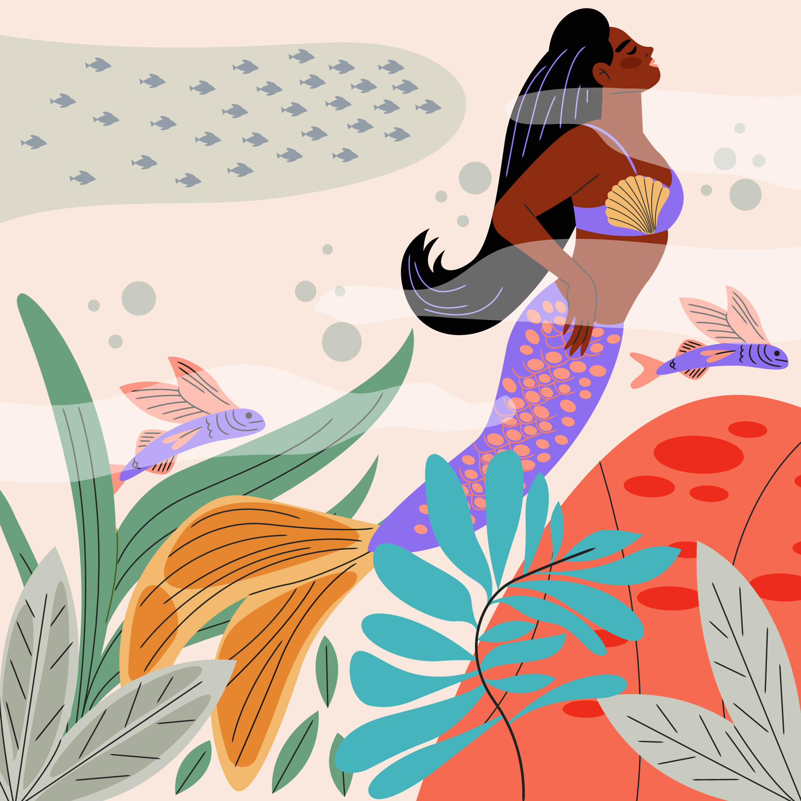
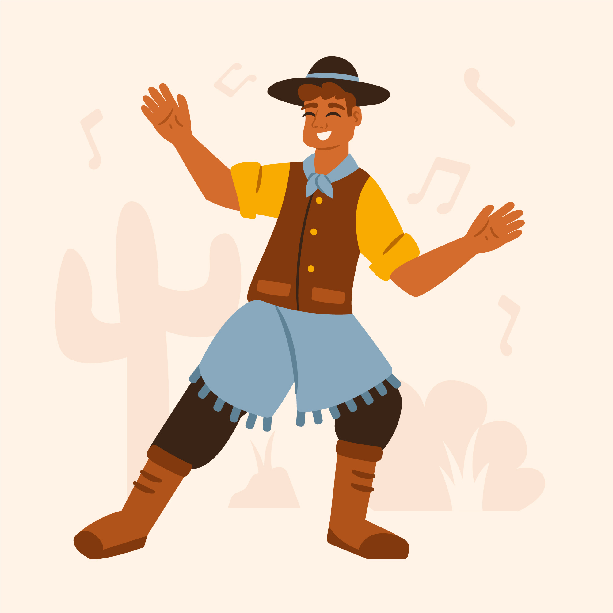

CURUPIRA
O Curupira é um ser encantado da floresta, pequeno e de cabelos vermelhos como fogo. Sua característica mais marcante são os pés virados para trás, o que confunde aqueles que tentam segui-lo. Ele é o protetor das matas e dos animais, castigando caçadores e lenhadores que desrespeitam a natureza. Conta-se que o Curupira cria ilusões e assombra aqueles que invadem seu território, levando-os a se perderem na floresta. Para se proteger dele, é comum que viajantes deixem pequenos presentes, como fumo ou cachaça, em oferenda.
BOITATÁ
A lenda do Boitatá tem origem indígena e fala sobre uma enorme cobra de fogo que protege os rios e as florestas. Dizem que o Boitatá é o espírito de uma cobra que sobreviveu a um grande dilúvio e, ao comer os olhos dos animais mortos, adquiriu o brilho intenso. Ele castiga aqueles que destroem a mata, incendiando suas casas e os devorando. Em algumas versões, o Boitatá aparece como uma bola de fogo que percorre os campos, assustando viajantes noturnos.

SACI-PERERÊ
O Saci-Pererê é um menino negro, de uma perna só, que usa um gorro vermelho e está sempre fumando um cachimbo. Ele adora pregar peças nas pessoas, como trançar as crinas dos cavalos, esconder objetos, azedar o leite e bagunçar a cozinha. Apesar das travessuras, ele também pode ajudar aqueles que o tratam com respeito. Para capturá-lo, diz-se que é preciso jogar uma peneira sobre um redemoinho de vento e tomar seu gorro, mas quem o fizer deve estar preparado para um Saci muito bravo tentando recuperá-lo.
IARA
Iara, também conhecida como "Mãe d'Água", é uma linda sereia de cabelos longos e olhos brilhantes que vive nos rios da Amazônia. Conta-se que ela era uma índia guerreira muito habilidosa e invejada pelos próprios irmãos. Em um complô, seus irmãos tentaram matá-la, mas Iara se defendeu e acabou fugindo. Seu pai, enfurecido, a jogou no rio, onde foi transformada em sereia. Desde então, Iara atrai os homens com seu canto hipnotizante e os leva para o fundo do rio, de onde nunca mais voltam.
MULA-SEM-CABEÇA
A Mula Sem Cabeça é o espírito de uma mulher que teve um romance proibido com um padre e foi amaldiçoada. Em noites de quinta para sexta-feira, ela se transforma em uma mula sem cabeça, soltando fogo pelo pescoço. Ela galopa sem rumo, aterrorizando aqueles que encontra pelo caminho. Diz-se que a maldição pode ser quebrada se alguém tiver coragem de retirar seu freio, mas poucos conseguem se aproximar o suficiente sem serem atacados por seus cascos e relinchos assustadores.
NEGRINHO DO PASTOREIO
A lenda do Negrinho do Pastoreio tem origem no período da escravidão. Um menino escravizado foi incumbido por seu cruel senhor de cuidar dos cavalos da fazenda. Quando um dos cavalos fugiu, o senhor o castigou severamente, jogando-o sobre um formigueiro. No dia seguinte, o menino desapareceu e, no lugar onde estava, surgiu a Virgem Maria, que o levou consigo. Desde então, acredita-se que o Negrinho do Pastoreio ajuda aqueles que perderam algo, bastando fazer uma prece em seu nome.
